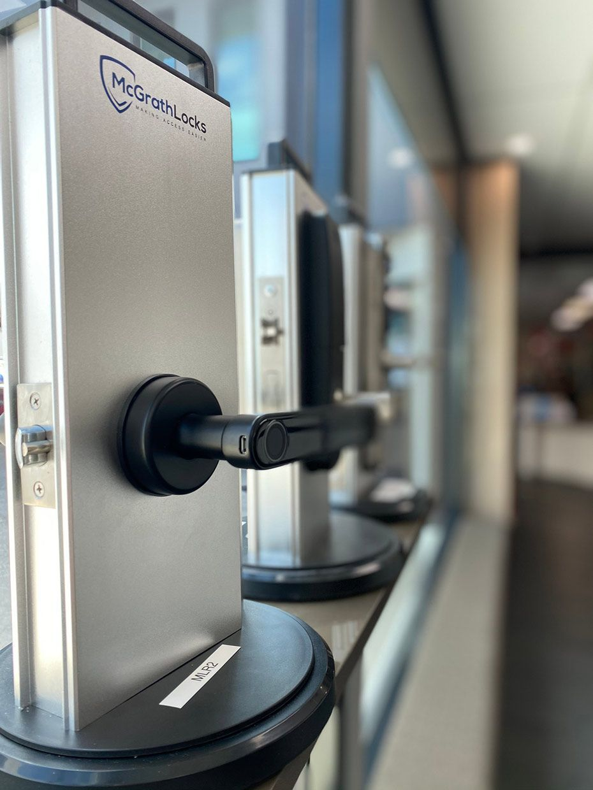

On this page
AT A GLANCE
At SPL Security Solutions, we provide reliable 24/7 mobile locksmith services in Varsity, delivering expert assistance wherever you need it.
Get A Free Quote Now!

Mobile Locksmith Services Varsity Lakes & Surrounds
At SPL Security Solutions, we provide reliable 24/7 mobile locksmith services in Varsity, delivering expert assistance wherever you need it. Whether it’s a lockout, a broken lock or an upgrade to your security system, our mobile locksmiths handle everything on-site with efficiency and professionalism.
Our mobile units are fully equipped with advanced tools and a wide selection of lock and key components, enabling us to provide a variety of different solutions in the first visit. From rekeying locks to cutting-edge security installations, we prioritise convenience, reliability and your peace of mind.
Call us on (07) 5588 8111 for expert locksmith services in Varsity.
Our residential locksmith services in Varsity are designed to enhance home security and accessibility. From smart lock installations and childproof mechanisms to lock rekeying and repairs, we ensure your home remains safe and functional.
Our commercial locksmith services in Varsity offer tailored security solutions for businesses. We provide master key systems, high-security lock installations and electronic access controls to protect your operations and assets.
Our automotive locksmith services in Varsity provide reliable assistance for car lockouts, ignition issues and key replacements. We can help with transponder programming and fob replacements for a wide range of vehicle models.
Our restricted key systems in Varsity enhance access control by preventing unauthorised duplication. These systems are ideal for homes, offices and commercial facilities with sensitive security needs.
We offer comprehensive safe services in Varsity, including installation, unlocking and maintenance. Our expertise covers wall safes, floor safes, digital safes and deposit safes, ensuring your valuables are stored securely.
Our security systems in Varsity combine components like CCTV cameras, motion sensors and smart alarms to deliver robust protection. With options for remote monitoring and mobile app control, these systems provide convenience and peace of mind.
Our lock hardware solutions in Varsity include high-security deadbolts, tamper-resistant locks and smart lock technology. We ensure every lock is installed for durability and maximum protection.
Upgrade your property with our premium door hardware in Varsity. From sleek handles to weatherproof hinges and sliding door systems, we combine functionality with style to meet your needs.
We source high-quality architectural hardware, including fire-resistant fixtures, smooth-operating closers, and refined handles, ensuring timeless appeal for modern and traditional designs in Varsity Lakes.
Emergency Locksmith Services Varsity
Emergencies often arise when least expected, and having a reliable locksmith can make all the difference.
- For homeowners
Locked out or dealing with a broken lock at your front door? We provide fast, non-destructive entry solutions, rekeying and repairs to restore your home’s security. - For business owners
Office lockouts, damaged high-security locks, or faulty access control systems can disrupt operations. We respond quickly to resolve these issues and keep your business running smoothly. - For vehicle owners
Stranded due to a car lockout, broken ignition key or lost transponder key? Our mobile locksmiths offer on-site key replacements, ignition repairs and programming services to get you back on the road ASAP.

Contact Details
24/7 Emergency Locksmiths or Security Tech
Trading Hours
Retail Shop

Frequently Asked Questions
-
Can smart locks work without a Wi-Fi connection?
Yes, many smart locks can operate without Wi-Fi using Bluetooth or a keypad for entry. However, features like remote access and notifications may require a Wi-Fi connection or smart home hub integration.
-
What is a keyless entry system, and is it secure?
A keyless entry system allows you to unlock doors using methods like PIN codes, smartphone apps, or biometrics instead of traditional keys. These systems are highly secure when installed correctly, often featuring encryption and access logs to prevent unauthorised entry and provide greater control over who can access your property.
Locksmith & Security Solutions Gold Coast, Brisbane & Northern NSW